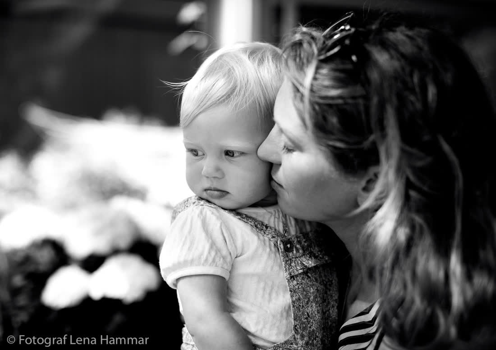

Fluga knöts efter dramatisk kamp
Klockan 11.30 hade brudgummen fortfarande inte fått till knuten. Hans bror tog över. Sedan pappan. Till slut en kypare från hotellet. ”Det är sånt jag lever för”, säger fotografen.
Moa och David vigdes i lördags vid Göta kanal. Vittnen beskriver stämningen som ”helt orimligt fin”. Fotografen var på plats.

Klockan 14.07 i lördags blev det tyst vid slussen i Söderköping. Moa Berglund, 31, och David Haddad, 33, stod under en gammal ek medan prästen läste. Några kanotister stannade upp mitt i farleden. En hund skällde. Sedan applåder.
– Jag hade lovat mig själv att inte gråta, säger David. Det höll i ungefär fyra sekunder.
Gustav Lindh, som har fotograferat bröllop i Östergötland sedan 2012, beskriver sitt arbetssätt som reporterns snarare än regissörens.
– Jag arrangerar nästan ingenting. Jag står där folk inte tittar och väntar på att något ska hända. Och det gör det alltid, säger han.
Efter vigseln fortsatte festen på en gård utanför stan, där gästerna enligt uppgift dansade till långt efter midnatt. Brudens moster ska ha framfört en egenskriven visa i fyra verser.
Brudparet har ännu inte sett bilderna. Leveransen sker inom tre veckor, uppger fotografen, ”med första bild redan på söndag morgon”.
Fortsättning på sidan 4: ”Därför valde de kanalen”.
Klockan 11.30 hade brudgummen fortfarande inte fått till knuten. Hans bror tog över. Sedan pappan. Till slut en kypare från hotellet. ”Det är sånt jag lever för”, säger fotografen.

Ett trettiotal nyfikna kvigor anslöt till parfotograferingen på en äng nära Arkösund. Brudparet bedömde senare kossbilderna som ”de bästa i hela galleriet”.

När bandet packade ihop vid tvåtiden stod en gäst kvar: brudgummens farmor Ingrid. ”Jag har dansat på bröllop sedan 1956. Jag tänker inte sluta nu.”

Gustav Lindh, 44, arbetade i femton år som pressfotograf på en lokaltidning i Östergötland. Kommunfullmäktige, fotbollsmatcher, bränder. Sedan bad en kollega honom fotografera hennes bröllop.
– Det var samma jobb. Läsa rummet, vara på rätt ställe, inte störa. Men alla var glada. Jag har inte gått tillbaka.
I dag tar han ett trettiotal bröllop per säsong och fotograferar däremellan familjer, porträtt och företag i hela Östergötland.
– Jag tycker om att folk ser ut som sig själva på bilderna. Inga tillgjorda poser. Om någon har spinat ut på dansgolvet så ska det synas.



”Vi trodde vi skulle hata att bli fotograferade. Vi märkte knappt att Gustav var där – och ändå finns varenda tår dokumenterad.”— Moa & David, Söderköping
”Bilderna kom på söndag morgon, en dag efter bröllopet. Vi låg i sängen och bläddrade i två timmar.”— Sara Ekström, Norrköping
”Beställde tidningstillägget. Hela släkten fick varsitt ex. Farfar har sitt på kylskåpet.”— Jesper & Niklas, Linköping

Gifter ni er? Ring tipsnumret 011-12 34 56 eller skriv till redaktionen@brollopsbladet.se. Eller klipp ut kupongen: